С деятельностью ЗАО «Резинотехника» я знаком, мягко говоря, не понаслышке. Организованная моим другом Антоном компания, 12 лет назад арендовала металлический гараж под склад рукавов и техпластин. Компания тогда состояла из одного Антона (и немного меня). Сегодня «Резинотехника» — лидер в поставках резинотехнической продукции в Кузбассе и даже немного дальше.
С полгода назад компания переехала в собственными силами выстроенный офис и склад. Ввиду того, что предприятие давно уже занимается не только продажей продукции, но и её производством, а также в связи с появлением необходимости представления этого производства не только в Кузбассе, но и за его пределами, было решено снять про производство презентационный ролик. Так как некоторые вопросы творческого плана для «Резинотехники» получается решать у меня, о потенциальном исполнителе я спросил у Алексея Калины, тот, в свою очередь, недолго думая, порекомендовал обратиться к Денису Лозингу.
Мы созвонились с Денисом, договорились о встрече и уже через несколько дней, его брат Вячеслав обсуждал с Антоном детали презентационного ролика.
Как проходили съёмки можно увидеть, посмотрев фотографии, опубликованные во «Вконтакте»
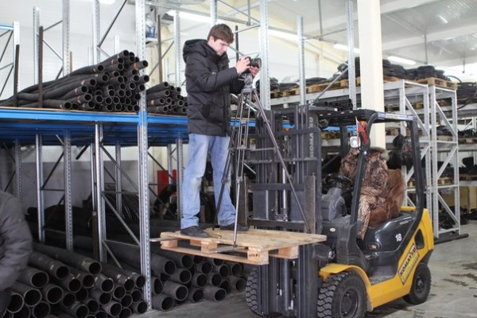
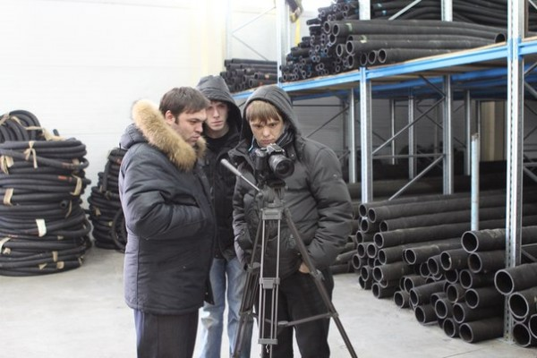
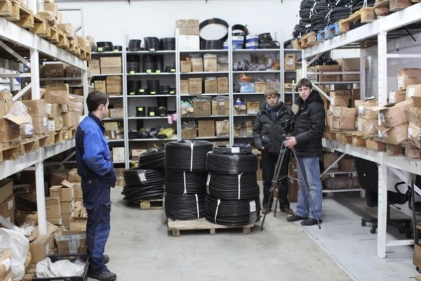
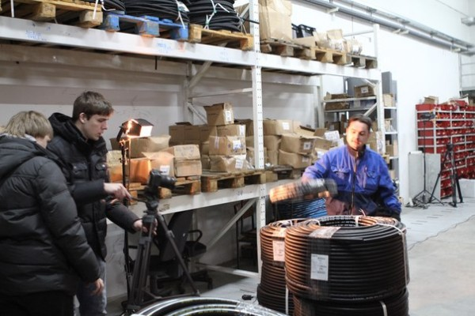
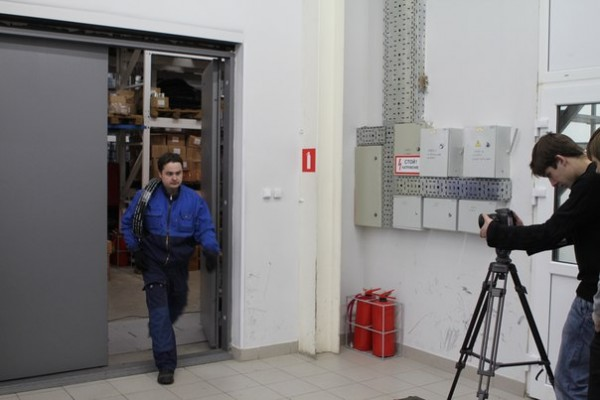
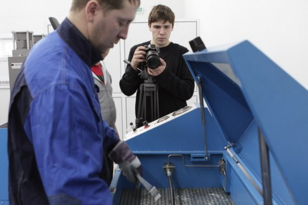
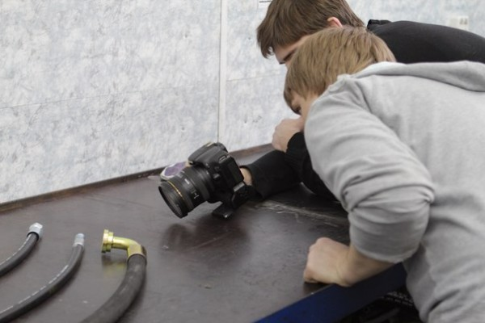
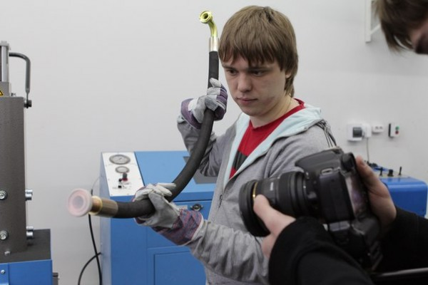
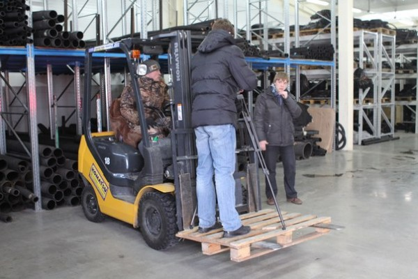
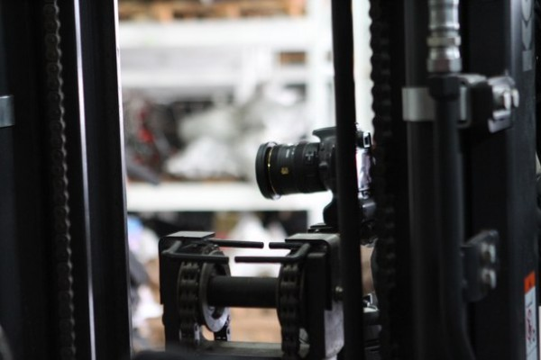
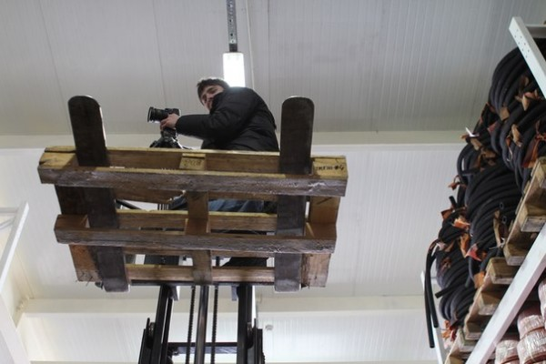
То, что получилось в итоге, не только приятно порадовало — удивило. Яркий, позитивный, динамичный. Наверняка, если бы я ближе был знаком с профессиональной видеосъёмкой, я бы нашёл куда больше правильных эпитетов результату.
Производство кинокомпании «Номер Люкс»: администрирование - Д. Лозинг режиссура и монтаж - В. Лозинг оператор - А. Жарков свет и фото на площадке - Е. Уткин эффекты - Е. Слободчиков
А ввиду, того, что я знаю, что стоимость этой работы была абсолютно адекватна, мне не остаётся ничего другого, кроме как рекомендовать «Номер Люкс» всем, кого воротит от «романтичного флёра провинциальности», кому важно показать свою компанию, как, по-настоящему, идущую в ногу со временем.